新しいグループ
名前・説明・色・アイコンを決めて、グループを作る
場所：「＋ 新しいグループ」／Ctrl+N
「＋ 新しいグループ」（または Ctrl+N）で、グループを作ります。名前・説明・色・アイコンを決められます。あとから変えることもできます。無料版は、グループが 5 個までです。
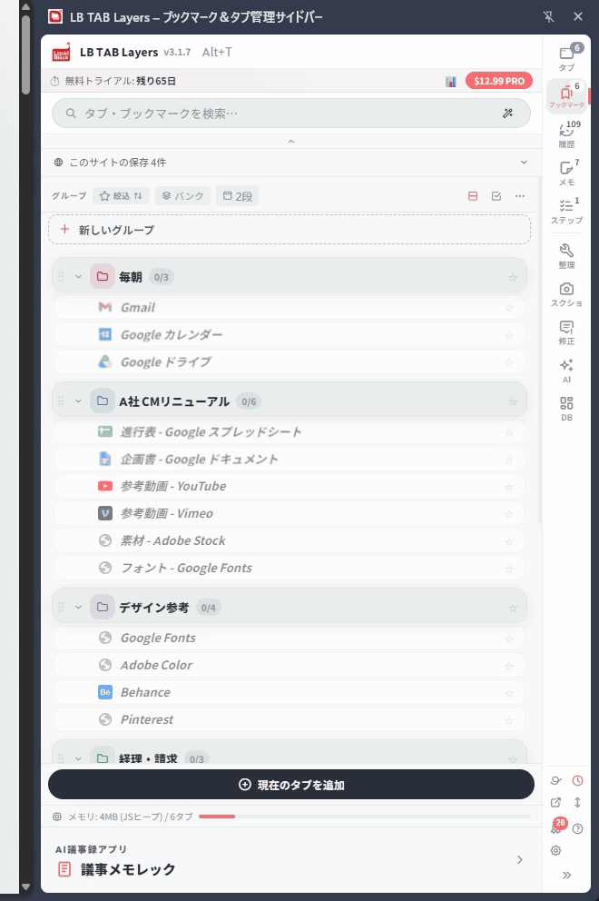
名前・説明・色・アイコンを決めて、グループを作る
場所：「＋ 新しいグループ」／Ctrl+N
「＋ 新しいグループ」（または Ctrl+N）で、グループを作ります。名前・説明・色・アイコンを決められます。あとから変えることもできます。無料版は、グループが 5 個までです。

今のページを、選んだグループに入れる
場所：下のボタン／グループの「＋」
グループの行の「＋」を押すと、今見ているページが、そのグループに入ります。下の「現在のタブを追加」からは、入れるグループを選べます。すでに別のグループに入っているページは、確認が出ます。
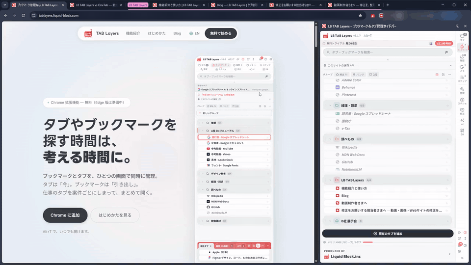
グループのページを、まとめて開く。Chrome のタブグループにもなる
場所：グループの行
グループの ▶ で、しまってあるページをまとめて開きます。開いたタブは、Chrome のタブグループとしてまとまります。■ で、そのグループのタブをまとめて閉じます。閉じても、ブックマークは残ります。
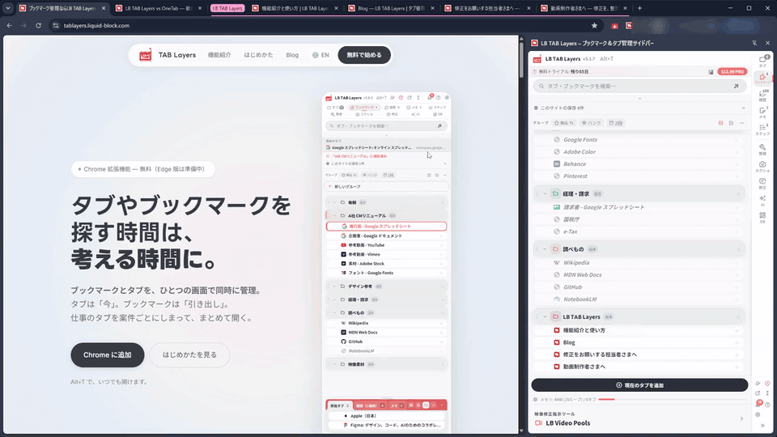
開いたタブを、まとめて閉じる。ブックマークは残る
場所：グループの行
グループの ▶ で、しまってあるページをまとめて開きます。開いたタブは、Chrome のタブグループとしてまとまります。■ で、そのグループのタブをまとめて閉じます。閉じても、ブックマークは残ります。
押して開閉。ダブルクリックで名前。編集で色とアイコン
場所：グループの行／「…」
グループの行を押すと、開いたり、たたんだりします。名前は、ダブルクリックで直せます。「…」の「編集」から、色・アイコン・説明を変えられます。
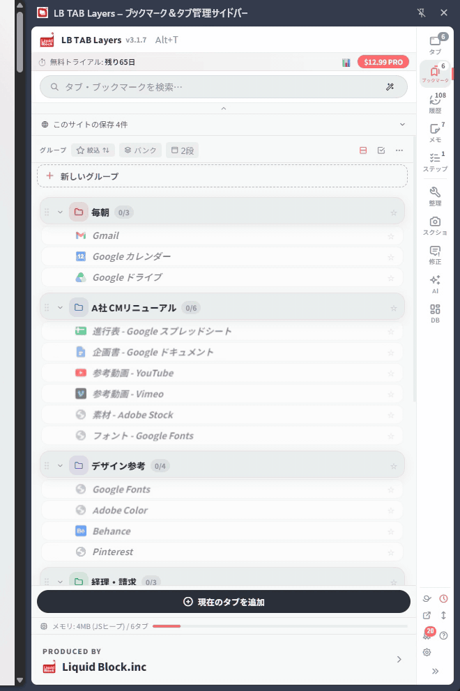
押して開く（開いていれば移る）。閉じる・名前を変える・外す
場所：グループの中の行
グループの中の行を押すと、そのページを開きます。すでに開いているときは、そのタブに移ります。行のボタンから、名前を変える・タブを閉じる・グループから外す、ができます。外した直後は、「元に戻す」で戻せます。
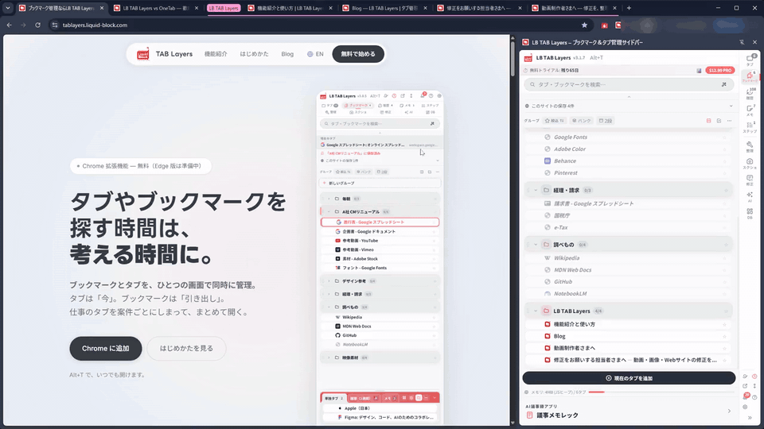
グループやタブに ★1〜5 を付け、★の数でしぼる
場所：行の ★／上の「絞込」
グループやページに、★1〜5 のランクを付けられます。上の「絞込」で、★の数でしぼって表示します。
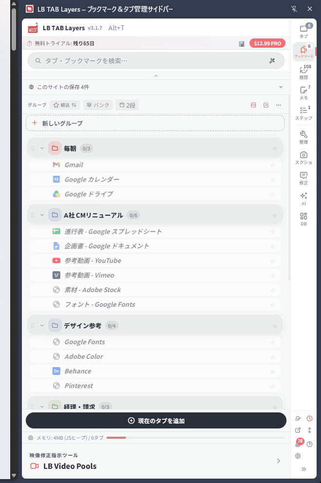
ドラッグで順番を変える。真ん中に落とすと、中のグループになる
場所：行の左のつまみ
グループの左のつまみをドラッグすると、順番が変わります。別のグループの真ん中に落とすと、その中のグループ（サブグループ）になります。
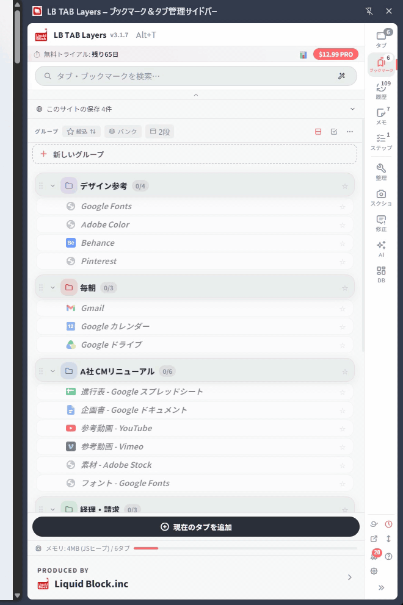
グループの間に、見出しつきの線を入れる
場所：「…」／右クリック
グループの「…」または右クリックから、グループの間に、見出しつきの区切りの線を入れられます。仕事用・私用などを分けるのに使えます。
グループを、最大 10 個の束に分けて切り替える（Alt+1〜0）
場所：上の「バンク」
バンクは、グループの束です。最大 10 個まで作れて、Alt+1〜0 で切り替えられます。仕事用と私用、案件の時期ごとなど、今使うグループだけを出しておけます。
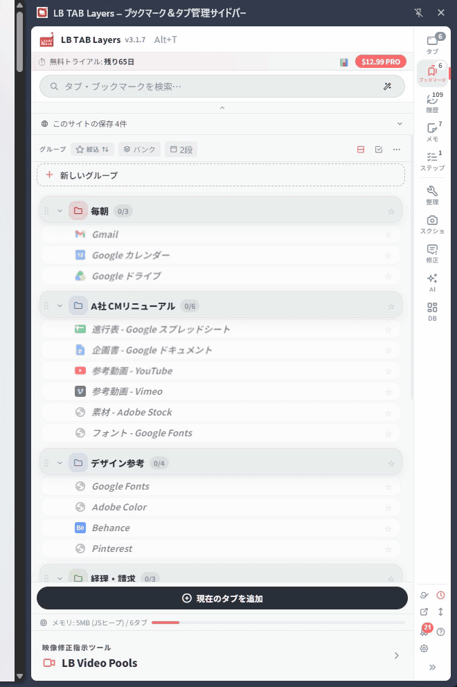
グループを横のタブにして、選んだものだけ下に出す
場所：上の「2段」
「2段」にすると、グループが上に横並びのタブとして出て、選んだグループの中身だけが下に出ます。グループが多いときに、縦に長くなりません。
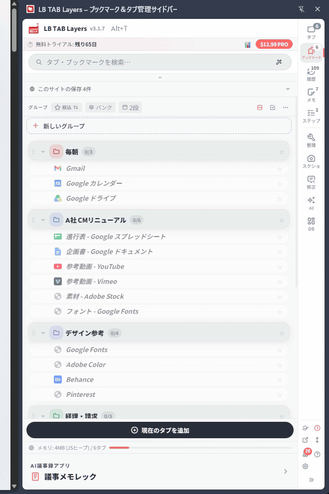
エクスプローラーのように、フォルダの絵で見る
場所：「…」› フォルダ表示にする
「…」の「フォルダ表示にする」で、グループを、パソコンのフォルダのような絵で並べます。フォルダを押すと、中のページが出ます。
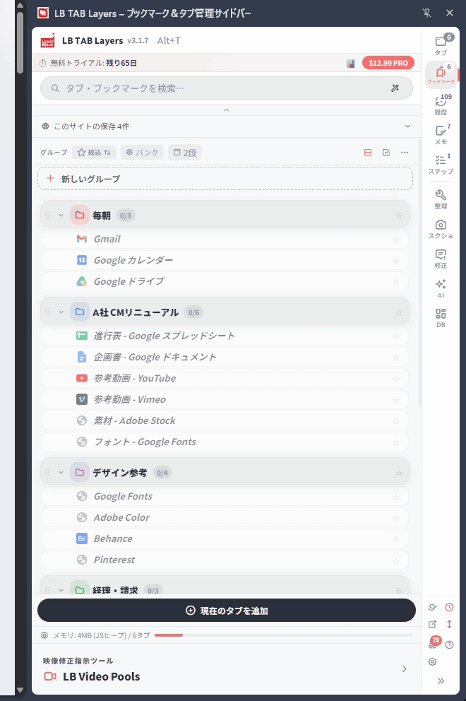
終わったグループを、消さずにしまう。あとで戻せる
場所：グループの「…」
終わったグループは、「…」の「アーカイブ」でしまえます。一覧からは消えますが、中身は残っていて、あとで戻せます。
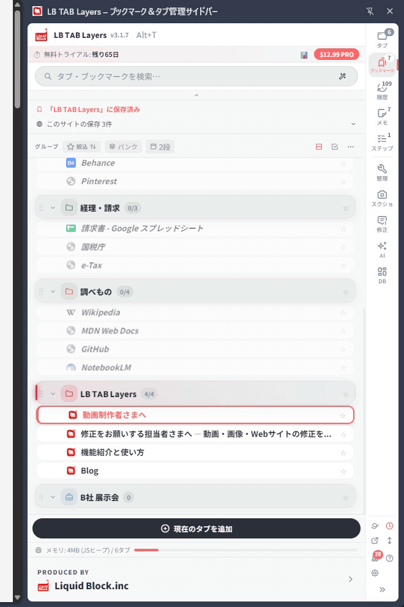
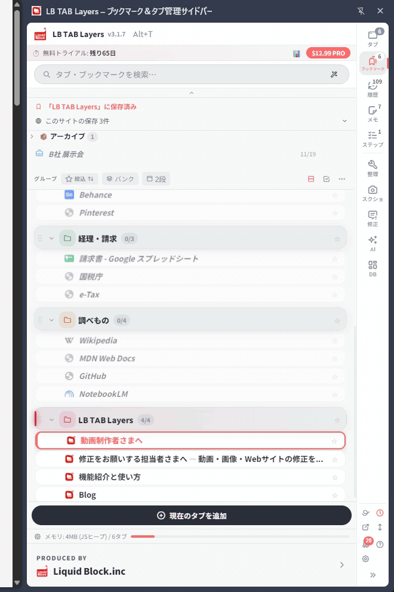
消したものは、ゴミ箱に 30 日残る。すぐなら「元に戻す」
場所：「…」／右クリック
消したグループやページは、ゴミ箱に 30 日残り、そのあいだは戻せます。消した直後は、「元に戻す」を押すだけで戻ります。
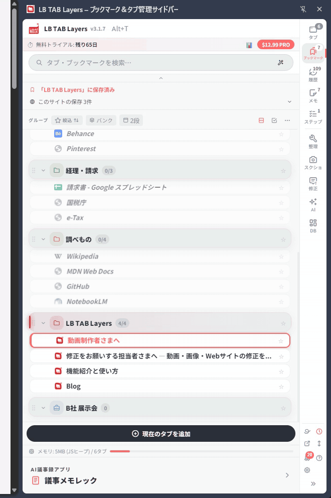
複数を選んで、まとめてランク・移動・閉じる・ゴミ箱へ
場所：上のチェックのボタン／行の長押し
上のチェックのボタン（または行の長押し）で、選択モードになります。複数のページやグループを選んで、まとめて、ランクを付ける・移す・タブを閉じる・ゴミ箱へ入れる、ができます。
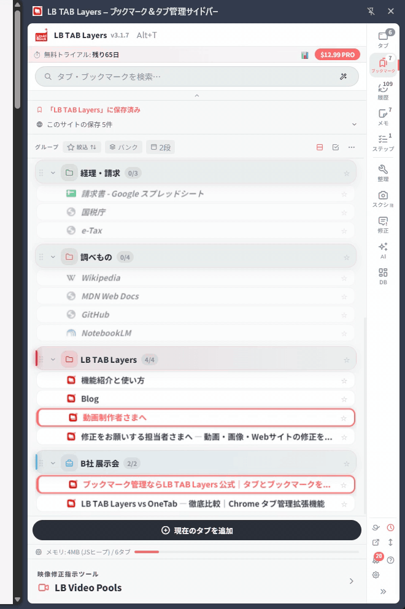
Web ページやリンクを右クリックして、グループへ入れる。パネルが閉じていてもできる
場所：ページの右クリック
Web ページやリンクを右クリックして、「LB TAB Layers」から、入れるグループを選べます。パネルを閉じていても使えます。
Ctrl+Shift+S で、「あとで整理」に入れる
場所：キー
Ctrl+Shift+S で、今のページを、グループ「あとで整理」にすぐ入れます。入れる先をあとで決めたいときに使えます。
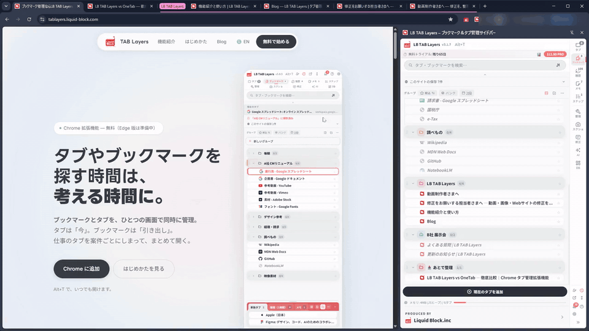
コピーした URL を Ctrl+V で貼り、グループを選ぶ（50 件まで）
場所：パネルの上で Ctrl+V
コピーした URL を、パネルの上で Ctrl+V で貼ると、入れるグループを選ぶ画面が出ます。一度に 50 件まで入れられます。ページの題名は、その URL を読んで付けます。
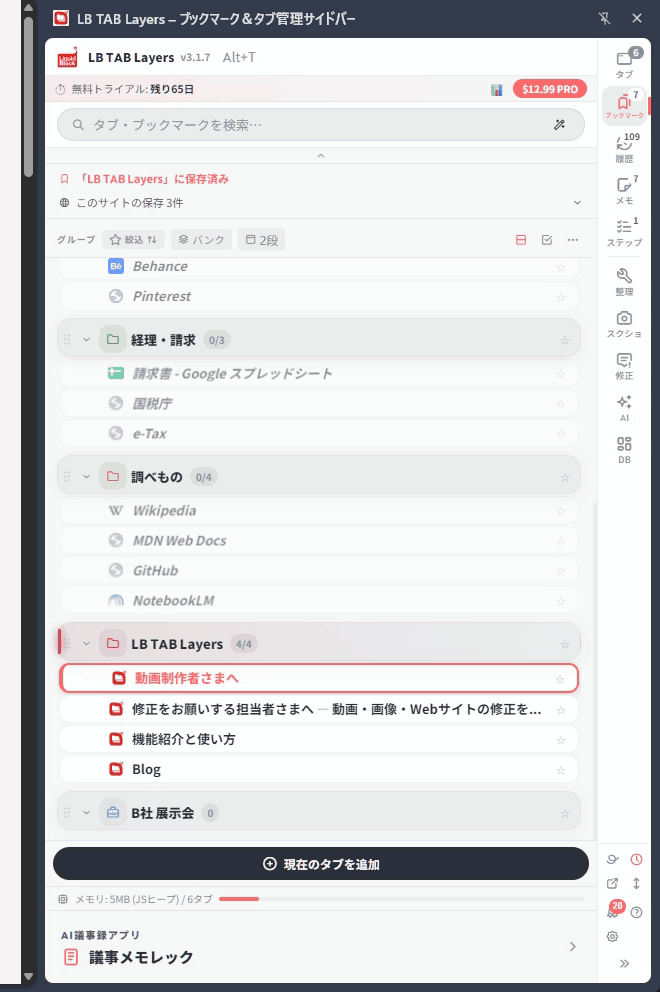
保存してあるページでは、拡張のアイコンに ✓。パネルにも「保存済み」と、同じサイトの保存の数が出る
場所：自動
保存してあるページを開くと、拡張機能のアイコンに ✓ が付き、パネルの上に「保存済み」と、入っているグループの名前が出ます。同じサイトのページをいくつ保存しているかも分かります。PRO の機能です（お試し期間中は使えます）。
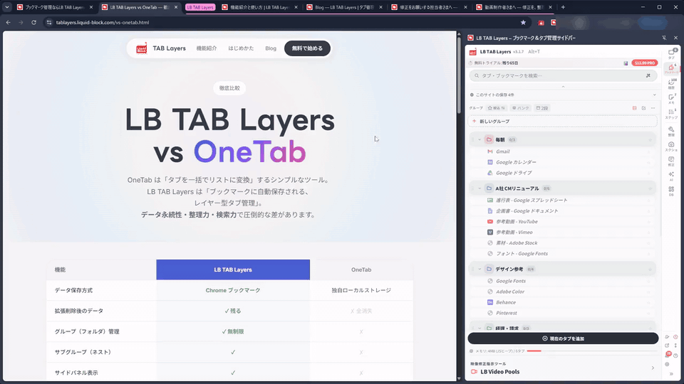
よく使うサイトを、アイコンで上に並べる（12 個まで）
場所：パネルの上
ピンバーには、よく使うサイトを、アイコンで 12 個まで並べられます。押すと、そのサイトを開きます（開いていれば、そのタブに移ります）。
グループは、Chrome のブックマークのフォルダそのもの。拡張を消しても残る
場所：しくみ
グループは、Chrome のブックマークのフォルダとして保存されます。拡張機能を止めたり消したりしても、ブックマークは Chrome に残ります。Chrome の同期を使っていれば、ほかのパソコンにも届きます。
2 つのページを、左右に並べて開く
場所：保存したタブの右クリック
保存したページの右クリックから、2 つのページを、左右に並べて開けます。見比べながら作業するときに使えます。
パソコンや NAS のフォルダの場所を、行として置く。押すと、場所をコピーする
場所：グループの右クリック
グループの右クリックから、パソコンや NAS のフォルダの場所を、行として置いておけます。押すと、その場所をコピーするので、エクスプローラーに貼って開けます。案件のファイルの置き場所を、ページと一緒にまとめておけます。
「受託案件」「経理・事務」などの組を、まとめて作る。自分の組も保存できる
場所：空いた所の右クリック
グループの一覧の空いた所を右クリックすると、「受託案件」「経理・事務」などのひな形から、グループの組をまとめて作れます。今のグループの組を、自分のひな形として保存することもできます。無料版は、グループが 5 個までです。
グループを、別のウィンドウで開く
場所：グループの「…」
グループの「…」から、そのグループのページを、別のウィンドウでまとめて開けます。案件ごとに、ウィンドウを分けて作業できます。